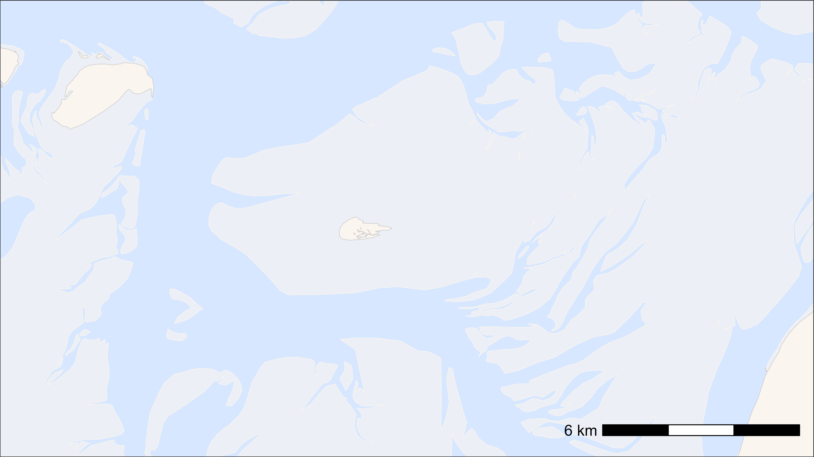
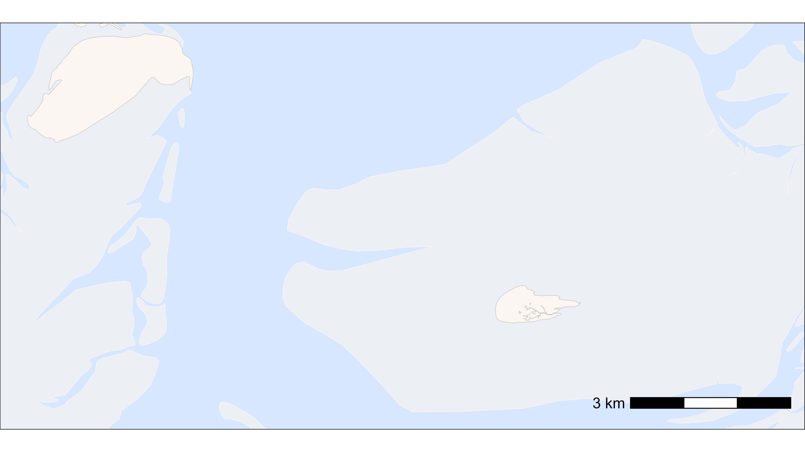
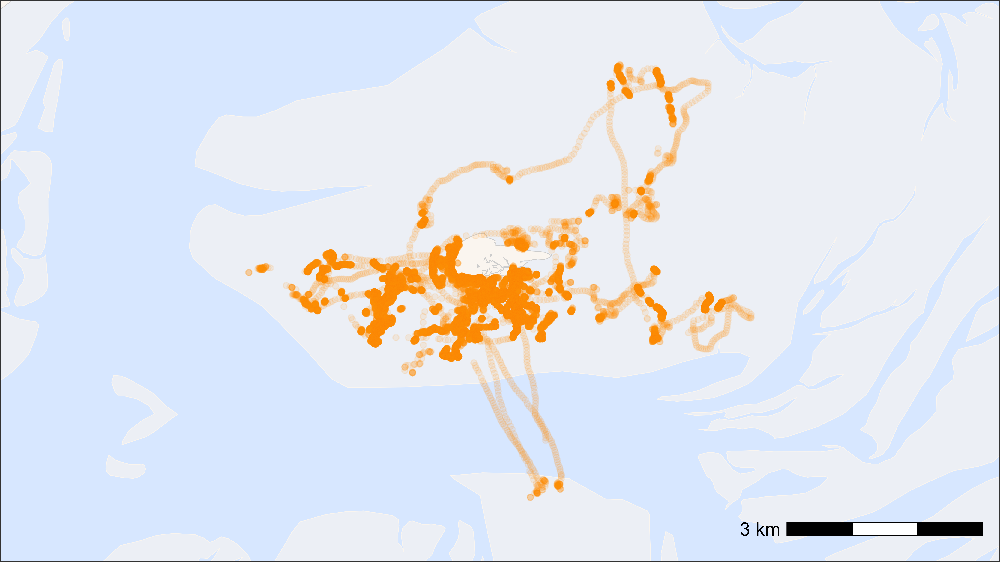
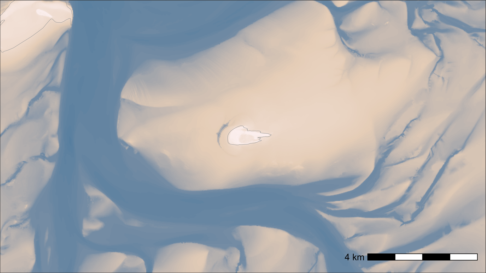
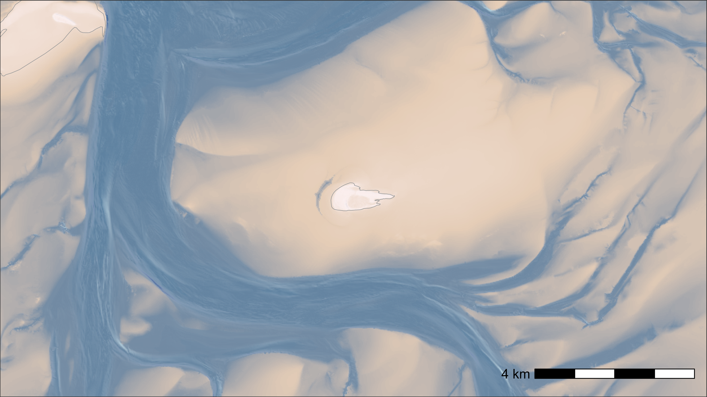
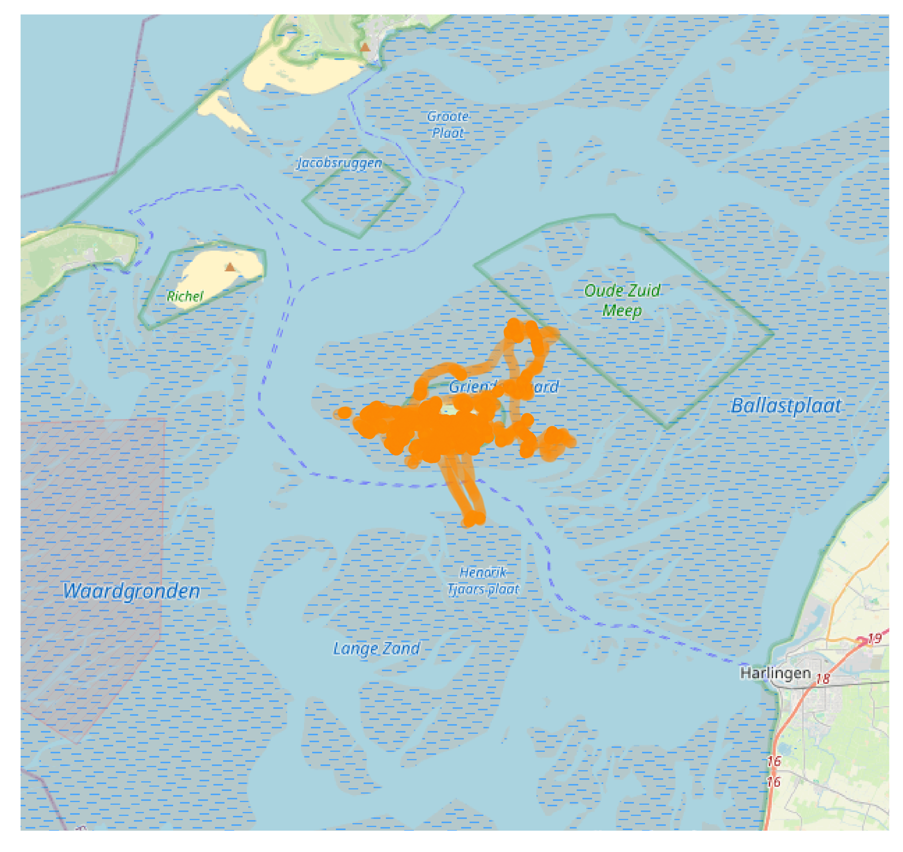

Create a basemap
Johannes Krietsch
Source:vignettes/visualization_tutorials/create_basemap.Rmd
create_basemap.RmdThis article shows how to make different basemaps to plot the
movement data on. Here we present three options: A simple basemap using
polygons provided with the package (see also article: Basemap
data), a simple basemap based on bathymetry data and flexible
approach using the package OpenStreetMap (e.g. to plot on a
satellite image).
Load packages
# Packages
library(tools4watlas)
library(ggplot2)Using ggplot2 and a basemap layer
One can create a simple basemaps of the study area by using the
function atl_create_bm(). This function uses a data.table
with x- and y-coordinates to check the required bounding box (which can
be extended with a buffer in meters) and spatial features (polygons) of
land, lakes, mudflats and rivers. Without adding spatial data, it will
default to the spatial data provided in the package. By changing
asp the desired aspect ratio can be chosen (default is
“16:9”). The resulting map is always in EPSG:32631 (WGS 84 / UTM zone
31N), but the data can be provided in other projections, which then
needs to be specified as projection.
Basemap independent of movement data
This can be useful when one wants to zoom into a specific area of the plot or has an area of interest, but the movement data also go out of this range. If no data are provided the function creates a map around Griend (our main study site) with a specified buffer.
# create basemap
bm <- atl_create_bm(buffer = 30000)
# plot
bm
Alternatively, one can provide a table with one or multiple locations, which will then be used to buffer the map. This can for example be a location in EPSG:4326 (WGS 84 in degrees) that can be exacted from Google Maps by a right click on a specific location. Here I choose a point a bit east of Griend, to include Richel and Ballastplaat in the map.
# define location
location <- data.table(x = c(5.275), y = c(53.2523))
# create basemap
bm <- atl_create_bm(location, buffer = 7000, projection = sf::st_crs(4326))
# plot
bm
Basemap with extend of movement data
# load example data
data <- data_example
# create basemap
bm <- atl_create_bm(data, buffer = 1000)
# plot
bm +
geom_point(data = data, aes(x, y), alpha = 0.1, color = "darkorange")
Basemap with bathymetry data
Bathymetry data can be found in the “Birds, fish ’n chips” SharePoint
folder: Documents/data/GIS/rasters/. To run the script set
the file path (fp) to the local copy of the folder on your
computer. The data can also be downloaded from the Waddenregister.
# additional packages
library(terra)
# file path to Birds, fish 'n chips GIS/rasters folder
fp <- atl_file_path("rasters")
# load bathymetry data
bat <- rast(paste0(fp, "bathymetry/2024/bodemhoogte_20mtr_UTM31_int.tif"))
# create base map with bathymetry data
bm <- atl_create_bm(
buffer = 5000, raster_data = bat, option = "bathymetry"
)
# plot
bm
We can also add some shading (shade = TRUE) to the
bathymetry data to highlight the water depth better. Note that
calculating the shade can take a while, especially for large maps. So,
only use this option for polished maps.
# additional packages
library(terra)
# file path to Birds, fish 'n chips GIS/rasters folder
fp <- atl_file_path("rasters")
# load bathymetry data
bat <- rast(paste0(fp, "bathymetry/2024/bodemhoogte_20mtr_UTM31_int.tif"))
# create base map with bathymetry data
bm <- atl_create_bm(
buffer = 5000, raster_data = bat, option = "bathymetry", shade = TRUE
)
# plot
bm
Basemap with OpenStreetMap
Provides a range of different basemap options. For this we first have to transform the data to WGS 84 to extract the basemap with the bounding box and then transform our data to a Mercator projection to plot the data on top of the map.
Unfortunately, sometimes the type = "bing" (satellite
image) does not work.
# additional packages
library(OpenStreetMap)
library(sf)
# load example data
data <- data_example
# make data spatial and transform projection to WGS 84 (used in osm)
d_sf <- atl_as_sf(data, additional_cols = c("tag", "datetime"))
d_sf <- st_transform(d_sf, crs = st_crs(4326))
# get bounding box
bbox <- atl_bbox(d_sf, asp = "16:9", buffer = 10000)
# extract openstreetmap
# other 'type' options are "osm", "maptoolkit-topo", "bing", "stamen-toner",
# "stamen-watercolor", "esri", "esri-topo", "nps", "apple-iphoto", "skobbler";
map <- openmap(
c(bbox["ymax"], bbox["xmin"]),
c(bbox["ymin"], bbox["xmax"]),
type = "osm", mergeTiles = TRUE
)
bm <- autoplot.OpenStreetMap(map)
# transform points to Mercator and add transformed coordinates to data
d_sf <- st_transform(d_sf, crs = sf::st_crs(3857))
osm_coords <- st_coordinates(d_sf)
data[, `:=`(x_osm = osm_coords[, 1], y_osm = osm_coords[, 2])]
# plot
bm +
geom_point(
data = data, aes(x_osm, y_osm), alpha = 0.1, color = "darkorange"
) +
coord_sf(crs = 3857, expand = FALSE) +
theme(
axis.title = element_blank(),
axis.text = element_blank(),
axis.ticks = element_blank(),
panel.grid.major = element_blank(),
panel.grid.minor = element_blank()
)
Additional features
How to add a WATLAS logo or receivers to a base map.
Add WATLAS logo to a basemap
# additional packages
library(ggimage)
# load example data
data <- data_example
# create basemap
bm <- atl_create_bm(data, buffer = 1000)
# path to WATLAS logo
logo_path <- system.file(
"extdata", "watlas_logo.png",
package = "tools4watlas"
)
# define position based on data (here upper left corner)
# adjust as desired
x_pos <- min(data$x) - 2500
y_pos <- max(data$y)
# create table with image of the logo
di <- data.table(x = x_pos, y = y_pos, image = logo_path)
# plot basemap with logo
bm +
geom_image(data = di, aes(x, y, image = image), size = 0.2)
Add WATLAS receivers to a basemap
Receiver data are managed by Allert. They are located in the “WATLAS”
SharePoint folder: Documents/data/. Either specify the path
to your local copy of this folder or add the path for your user in the
atl_file_path() function.
# load example data
data <- data_example
# create basemap
bm <- atl_create_bm(data, buffer = 20000)
# file path to WATLAS teams data folder
fp <- atl_file_path("watlas_teams")
# load receivers data
dr <- readxl::read_excel(
paste0(fp, "receivers/receiver specifications.xlsx"),
sheet = "receivers"
) |>
data.table()
# end date for active receivers as system date
dr[active == "ja", date_removed := as.POSIXct(Sys.time(), tz = "UTC")]
# subset all active in period of tracking data
start <- min(data$datetime)
end <- max(data$datetime)
# Check if each row includes period of tracking data
dr[, includes_data := (date_placed <= end & date_removed >= start)]
dr <- dr[includes_data == TRUE]
# plot basemap with receivers active during tracking period
bm +
geom_point(data = dr, aes(x, y), pch = 17)One can also add the name of the receiver.
# additional packages
library(ggrepel)
# plot basemap with receivers and label
bm +
geom_point(data = dr, aes(x, y), pch = 17, size = 1.5) +
geom_text_repel(
data = dr, aes(x, y, label = location),
max.overlaps = Inf,
size = 3,
point.padding = 0.5,
segment.color = "grey50"
)